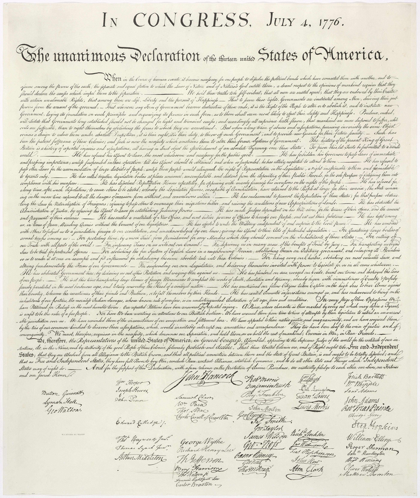
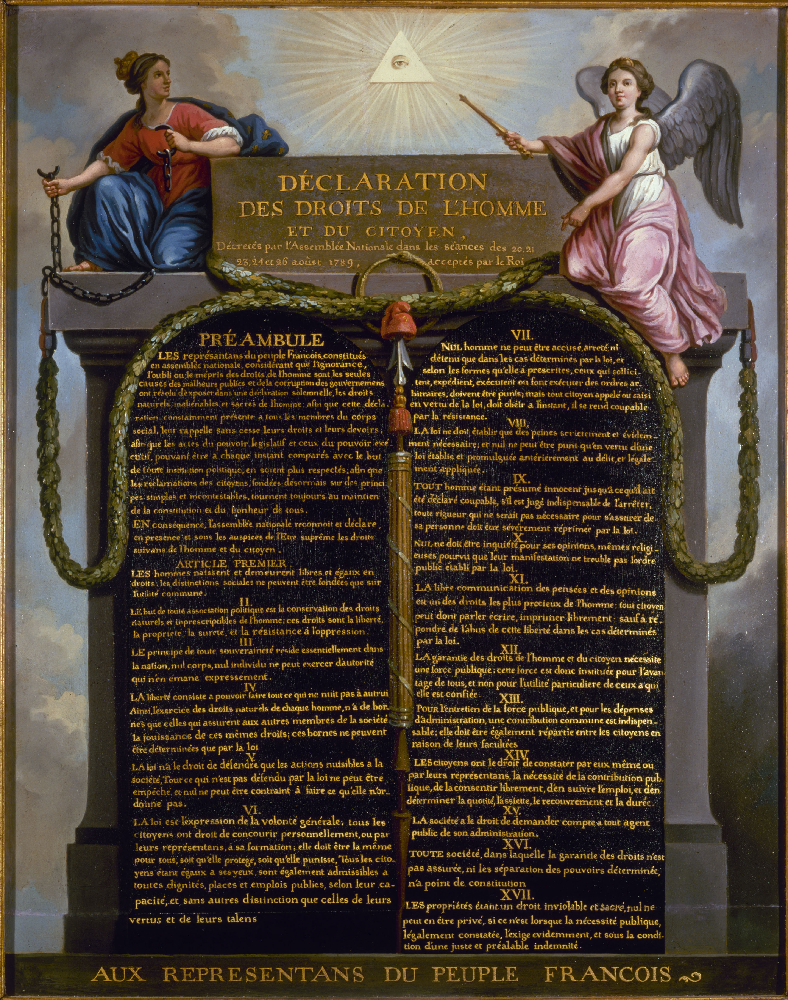
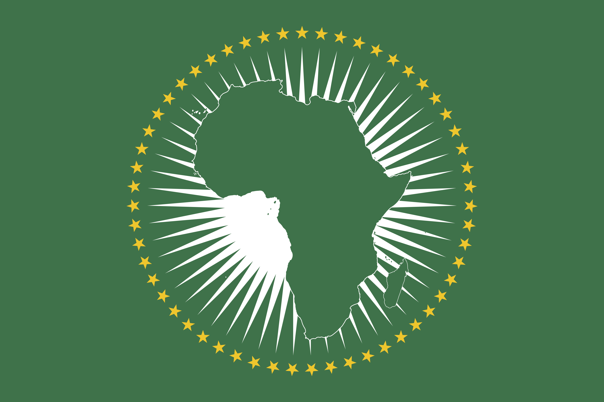
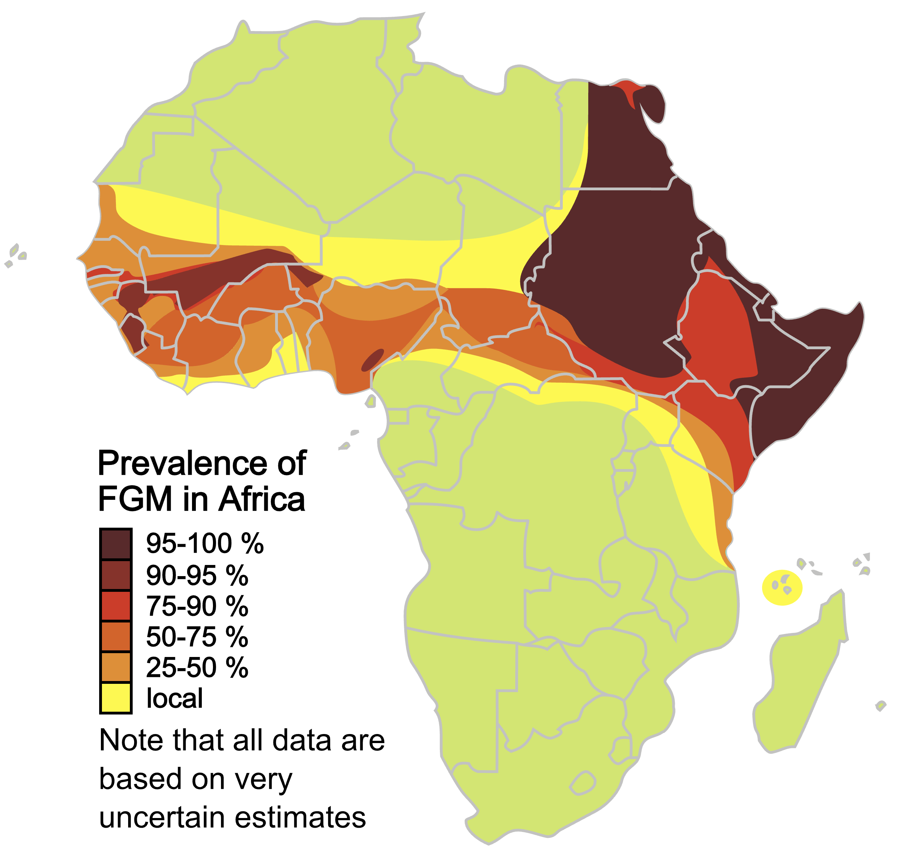
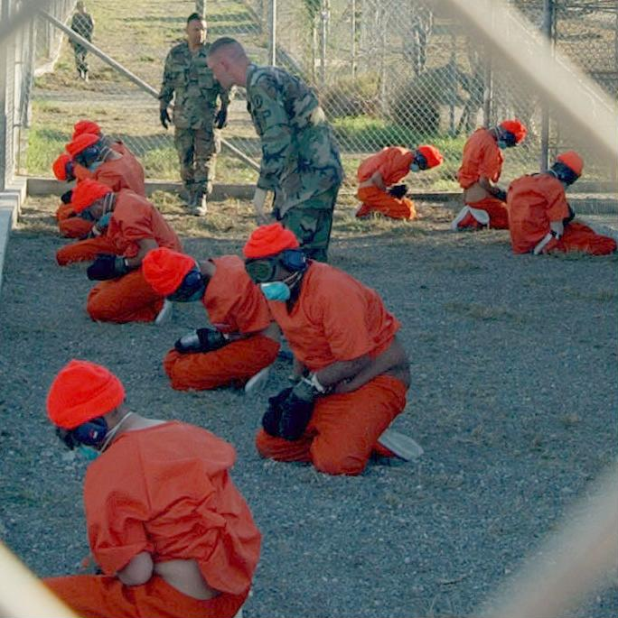

Human rights

Human rights are universally recognized moral principles or norms that establish standards of human behavior and are often protected by both national and international laws . These rights are considered inherent and inalienable, meaning they belong to every individual simply by virtue of being human , regardless of characteristics like nationality, ethnicity, religion, gender, sexual orientation, disability, caste, or socioeconomic status. They encompass a broad range of civil, political, economic, social, and cultural rights, such as the right to life , freedom of speech , protection against enslavement , and right to education .
While ideas related to human rights predate modernity, the modern concept of human rights gained significant prominence after World War II , particularly in response to the atrocities of the Holocaust , leading to the adoption of the Universal Declaration of Human Rights (UDHR) by the United Nations General Assembly in 1948. This document outlined a comprehensive framework of rights that countries are encouraged to protect, setting a global standard for human dignity , freedom, and justice. The Universal Declaration of Human Rights (UDHR) has since inspired numerous international treaties and national laws aimed at promoting and protecting human rights worldwide.
While the principle of universal human rights is widely accepted, debates persist regarding which rights should take precedence, how they should be implemented, and their applicability in different cultural contexts. Criticisms often arise from perspectives like cultural relativism , which argue that individual human rights are inappropriate for societies that prioritize a communal or collectivist identity, and may conflict with certain cultural or traditional practices.
Nonetheless, human rights remain a central focus in international relations and legal frameworks, supported by institutions such as the United Nations, various non-governmental organization s, and national bodies dedicated to monitoring and enforcing human rights standards worldwide.
History

Many of the basic ideas that animated the human rights movement developed in the aftermath of the Second World War and the events of the Holocaust , culminating in the adoption of the Universal Declaration of Human Rights in Paris by the United Nations General Assembly in 1948.
Ancient peoples did not have the same modern-day conception of universal human rights. However, the concept has in some sense existed for centuries, although not in the same way as today. In the West, Jewish and Christian scriptures provided some conceptual foundations for discourse on rights along with Roman law providing legal foundations on what implementation may look like.
The true forerunner of human rights discourse was the concept of natural rights , which first appeared as part of the medieval natural law tradition. It developed in new directions during the European Enlightenment with such philosophers as John Locke , Francis Hutcheson , and Jean-Jacques Burlamaqui , and featured prominently in the political discourse of the American Revolution and the French Revolution . From this foundation, the modern human rights arguments emerged over the latter half of the 20th century, possibly as a reaction to slavery, torture, genocide, and war crimes.
The medieval natural law tradition was heavily influenced by the writings of St Paul's early Christian thinkers such as St Hilary of Poitiers , St Ambrose , and St Augustine . Augustine was among the earliest to examine the legitimacy of the laws of man, and attempt to define the boundaries of what laws and rights occur naturally based on wisdom and conscience, instead of being arbitrarily imposed by mortals, and if people are obligated to obey laws that are unjust .
The Kouroukan Fouga was the constitution of the Mali Empire in West Africa . It was composed in the 13th century, and was one of the very first charters on human rights. It included the "right to life and to the preservation of physical integrity" and significant protections for women.
Spanish scholasticism insisted on a subjective vision of law during the 16th and 17th centuries: Luis de Molina , Domingo de Soto and Francisco Vitoria , members of the School of Salamanca , defined law as a moral power over one's own. Although they maintained at the same time, the idea of law as an objective order, they stated that there are certain natural rights, mentioning both rights related to the body (right to life, to property) and to the spirit (right to freedom of thought , dignity). The jurist Vázquez de Menchaca, starting from an individualist philosophy, was decisive in the dissemination of the term iura naturalia . This natural law thinking was supported by contact with American civilizations and the debate that took place in Castile about the just titles of the conquest and, in particular, the nature of the indigenous people. In the Castilian colonization of America, it is often stated, measures were applied in which the germs of the idea of Human Rights are present, debated in the well-known Valladolid Debate that took place in 1550 and 1551. The thought of the School of Salamanca, especially through Francisco Vitoria, also contributed to the promotion of European natural law.
From this foundation, the modern human rights arguments emerged over the latter half of the 20th century. Magna Carta is an English charter originally issued in 1215 which influenced the development of the common law and many later constitutional documents related to human rights, such as the 1689 English Bill of Rights , the 1789 United States Constitution , and the 1791 United States Bill of Rights .
17th century English philosopher John Locke discussed natural rights in his work, identifying them as being "life, liberty, and estate (property)", and argued that such fundamental rights could not be surrendered in the social contract . In Britain in 1689, the English Bill of Rights and the Scottish Claim of Right each made a range of oppressive governmental actions, illegal. Two major revolutions occurred during the 18th century, in the United States (1776) and in France (1789), leading to the United States Declaration of Independence and the French Declaration of the Rights of Man and of the Citizen respectively, both of which articulated certain human rights. Additionally, the Virginia Declaration of Rights of 1776 encoded into law a number of fundamental civil rights and civil freedoms.
We hold these truths to be self-evident, that all men are created equal, that they are endowed by their Creator with certain unalienable Rights, that among these are Life, Liberty and the pursuit of Happiness.
— United States Declaration of Independence , 1776
1800 to World War I

Philosophers such as Thomas Paine , John Stuart Mill , and Hegel expanded on the theme of universality during the 18th and 19th centuries. In 1831, William Lloyd Garrison wrote in a newspaper called The Liberator that he was trying to enlist his readers in "the great cause of human rights", so the term human rights probably came into use sometime between Paine's The Rights of Man and Garrison's publication. In 1849 a contemporary, Henry David Thoreau , wrote about human rights in his treatise On the Duty of Civil Disobedience which was later influential on human rights and civil rights thinkers. United States Supreme Court Justice David Davis , in his 1867 opinion for Ex Parte Milligan , wrote "By the protection of the law, human rights are secured; withdraw that protection and they are at the mercy of wicked rulers or the clamor of an excited people."
Many groups and movements have managed to achieve profound social changes over the course of the 20th century in the name of human rights. In Western Europe and North America, labour unions brought about laws granting workers the right to strike, establishing minimum work conditions and forbidding or regulating child labour . The women's rights movement succeeded in gaining for many women the right to vote . National liberation movements in many countries succeeded in driving out colonial powers. One of the most influential was Mahatma Gandhi 's leadership of the Indian independence movement . Movements by long-oppressed racial and religious minorities succeeded in many parts of the world, among them the civil rights movement , and more recent diverse identity politics movements, on behalf of women and minorities in the United States.
The foundation of the International Committee of the Red Cross , the 1864 Lieber Code and the first of the Geneva Conventions in 1864 laid the foundations of International humanitarian law , to be further developed following the two World Wars.
Between World War I and World War II
The League of Nations was established in 1919 at the negotiations over the Treaty of Versailles following the end of World War I . The League's goals included disarmament, preventing war through collective security, settling disputes between countries through negotiation, diplomacy and improving global welfare. Enshrined in its Charter was a mandate to promote many of the rights which were later included in the Universal Declaration of Human Rights. The League of Nations had mandates to support many of the former colonies of the Western European colonial powers during their transition from colony to independent state. Established as an agency of the League of Nations, and now part of United Nations, the International Labour Organization also had a mandate to promote and safeguard certain of the rights later included in the Universal Declaration of Human Rights (UDHR):
the primary goal of the ILO today is to promote opportunities for women and men to obtain decent and productive work, in conditions of freedom, equity, security and human dignity.
— Report by the Director General for the International Labour Conference 87th Session
After World War II
Universal Declaration of Human Rights

The Universal Declaration of Human Rights (UDHR) is a non-binding declaration adopted by the United Nations General Assembly in 1948, partly in response to the events of World War II . The UDHR urges member states to promote a number of human, civil, economic and social rights, asserting these rights are part of the "foundation of freedom, justice and peace in the world". The declaration was the first international legal effort to limit the behavior of states and make sure they did their duties to their citizens following the model of the rights-duty duality .
... recognition of the inherent dignity and of the equal and inalienable rights of all members of the human family is the foundation of freedom, justice and peace in the world
— Preamble to the Universal Declaration of Human Rights , 1948
The UDHR was framed by members of the Human Rights Commission, with Eleanor Roosevelt as chair, who began to discuss an International Bill of Rights in 1947. The members of the Commission did not immediately agree on the form of such a bill of rights, and whether, or how, it should be enforced. The Commission proceeded to frame the UDHR and accompanying treaties, but the UDHR quickly became the priority. Canadian law professor John Humphrey and French lawyer René Cassin were responsible for much of the cross-national research and the structure of the document respectively, where the articles of the declaration were interpretative of the general principle of the preamble. The document was structured by Cassin to include the basic principles of dignity, liberty, equality and brotherhood in the first two articles, followed successively by rights pertaining to individuals; rights of individuals in relation to each other and to groups; spiritual, public and political rights; and economic, social and cultural rights . The final three articles place, according to Cassin, rights in the context of limits, duties and the social and political order in which they are to be realized. Humphrey and Cassin intended the rights in the UDHR to be legally enforceable through some means, as is reflected in the third clause of the preamble:
Whereas it is essential, if man is not to be compelled to have recourse, as a last resort, to rebellion against tyranny and oppression, that human rights should be protected by the rule of law.
— Preamble to the Universal Declaration of Human Rights , 1948
Some of the UDHR was researched and written by a committee of international experts on human rights, including representatives from all continents and all major religions, and drawing on consultation with leaders such as Mahatma Gandhi . The inclusion of both civil and political rights and economic, social, and cultural rights was predicated on the assumption that basic human rights are indivisible and that the different types of rights listed are inextricably linked. Although this principle was not opposed by any member states at the time of adoption (the declaration was adopted unanimously, with the abstention of the Soviet bloc , apartheid South Africa, and Saudi Arabia ), this principle was later subject to significant challenges. On the issue of the term universal , the declarations did not apply to domestic discrimination or racism. Henry J. Richardson III argued:
- All major governments at the time of drafting the U.N. charter and the Universal declaration did their best to ensure, by all means known to domestic and international law, that these principles had only international application and carried no legal obligation on those governments to be implemented domestically. All tacitly realized that for their own discriminated-against minorities to acquire leverage on the basis of legally being able to claim enforcement of these wide-reaching rights would create pressures that would be political dynamite.
The onset of the Cold War soon after the UDHR was conceived brought to the fore divisions over the inclusion of both economic and social rights and civil and political rights in the declaration. Capitalist states tended to place strong emphasis on civil and political rights (such as freedom of thought , freedom of speech , and freedom of association ), and were reluctant to include economic and social rights (such as the right to work and the right to join a union). Socialist states placed much greater importance on economic and social rights and argued strongly for their inclusion. Because of the divisions over which rights to include and because some states declined to ratify any treaties including certain specific interpretations of human rights, and despite the Soviet bloc and a number of developing countries arguing strongly for the inclusion of all rights in a Unity Resolution, the rights enshrined in the UDHR were split into two separate covenants, allowing states to adopt some rights and derogate others. Although this allowed the covenants to be created, it denied the proposed principle that all rights are linked, which was central to some interpretations of the UDHR. Although the UDHR is a non-binding resolution, it is now considered to be a central component of international customary law which may be invoked under appropriate circumstances by state judiciaries and other judiciaries.
In 2021 the United Nations Human Rights Council officially recognized "having a clean, healthy and sustainable environment" as a human right. In April 2024, the European Court of Human Rights ruled, for the first time in history, that the Swiss government had violated human rights by not acting strongly enough to stop climate change. In 2025, the International Court of Justice (ICJ) has said in an advisory opinion, a "clean, healthy and sustainable environment" is a human right, and that failing to protect the planet from the impacts of climate change may be a violation of international law.
Human Rights Treaties
In 1966, the International Covenant on Civil and Political Rights (ICCPR) and the International Covenant on Economic, Social and Cultural Rights (ICESCR) were adopted by the United Nations, between them making the rights contained in the UDHR binding on all states. They came into force only in 1976, when they were ratified by a sufficient number of countries (despite achieving the ICCPR, a covenant including no economic or social rights, the US only ratified the ICCPR in 1992). The ICESCR commits 155 state parties to work toward the granting of economic, social, and cultural rights (ESCR) to individuals.
Numerous other treaties ( pieces of legislation ) have been offered at the international level. They are generally known as human rights instruments . Some of the most significant are:
- Convention on the Prevention and Punishment of the Crime of Genocide (adopted 1948, entry into force: 1951) unhchr.ch
- Convention on the Elimination of All Forms of Racial Discrimination (CERD) (adopted 1966, entry into force: 1969) unhchr.ch
- Convention on the Elimination of All Forms of Discrimination Against Women (CEDAW) (entry into force: 1981) Convention on the Elimination of All Forms of Discrimination against Women
- United Nations Convention Against Torture (CAT) (adopted 1984, entry into force: 1984)
- Convention on the Rights of the Child (CRC) (adopted 1989, entry into force: 1989) Convention on the Rights of the Child | UNICEF Archived 26 April 2019 at the Wayback Machine
- International Convention on the Protection of the Rights of All Migrant Workers and Members of their Families (ICRMW) (adopted 1990)
- Rome Statute of the International Criminal Court (ICC) (entry into force: 2002)
Promotion strategies
Paradigms of implementation
Charles Beitz proposes a typology of six paradigms of action that agents, such as human rights agencies, international organizations, individual states, and NGOs , could use to enforce human rights: (1) accountability, (2) inducement, (3) assistance, (4) domestic contestation and engagement, (5) compulsion, and (6) external adaptation.
Accountability refers to the process of examining and evaluating reports to ensure that states adhering to treaties are meeting their obligations. Inducement consists of the use of incentive systems, including the threat of sanctions, to deter violations and promote adherence to human rights standards. Assistance means providing support to societies that lack the resources or capabilities to meet human rights commitments. Domestic contestation and engagement refers to the notion that external actors can impact a state's behavior by participating in its internal political and social processes. Compulsion is the most extreme method of enforcing human rights through external action involves the use of coercive measures. External adaptation as a paradigm of implementation recognizes that human rights compliance may require not only domestic efforts but also reforming external factors like trade policies or international laws that hinder a government's ability to uphold rights.
Military force
Responsibility to protect refers to a doctrine for United Nations member states to intervene to protect populations from atrocities. It has been cited as justification in the use of recent military interventions. An example of an intervention that is often criticized is the 2011 military intervention in the First Libyan Civil War by NATO and Qatar where the goal of preventing atrocities is alleged to have taken upon itself the broader mandate of removing the target government.
Economic actions
Economic sanctions are often levied upon individuals or states who commit human rights violations. Sanctions are often criticized for its feature of collective punishment in hurting a country's population economically in order dampen that population's view of its government. It is also argued that, counterproductively, sanctions on offending authoritarian governments strengthen that government's position domestically as governments would still have more mechanisms to find funding than their critics and opposition, who become further weakened.
The risk of human rights violations increases with the increase in financially vulnerable populations. Girls from poor families in non-industrialized economies are often viewed as a financial burden on the family and marriage of young girls is often driven in the hope that daughters will be fed and protected by wealthier families. Female genital mutilation and force-feeding of daughters is argued to be similarly driven in large part to increase their marriage prospects and thus their financial security by achieving certain idealized standards of beauty. In certain areas, girls requiring the experience of sexual initiation rites with men and passing sex training tests on girls are designed to make them more appealing as marriage prospects. Measures to help the economic status of vulnerable groups in order to reduce human rights violations include girls' education and guaranteed minimum incomes and conditional cash transfers , such as Bolsa familia which subsidize parents who keep children in school rather than contributing to family income, has successfully reduced child labor .
Informational strategies
Human rights abuses are monitored by United Nations committees, national institutions and governments and by many independent non-governmental organizations , such as Amnesty International , Human Rights Watch , World Organisation Against Torture , Freedom House , International Freedom of Expression Exchange and Anti-Slavery International . These organisations collect evidence and documentation of human rights abuses and apply pressure to promote human rights. Educating people on the concept of human rights has been argued as a strategy to prevent human rights abuses.
Legal instruments
Many examples of legal instruments at the international, regional and national level described below are designed to enforce laws securing human rights.
Protection at the international level
United Nations

The United Nations (UN) is the only multilateral governmental agency with universally accepted international jurisdiction for universal human rights legislation. All UN organs have advisory roles to the United Nations Security Council and the United Nations Human Rights Council , and there are numerous committees within the UN with responsibilities for safeguarding different human rights treaties. The most senior body of the UN with regard to human rights is the Office of the High Commissioner for Human Rights. The United Nations has an international mandate to:
... achieve international co-operation in solving international problems of an economic, social, cultural, or humanitarian character, and in promoting and encouraging respect for human rights and for fundamental freedoms for all without distinction as to race, sex, language, or religion.
— Article 1–3 of the Charter of the United Nations
Human Rights Council
The UN Human Rights Council, created in 2005, has a mandate to investigate alleged human rights violations. 47 of the 193 UN member states sit on the council, elected by simple majority in a secret ballot of the United Nations General Assembly . Members serve a maximum of six years and may have their membership suspended for gross human rights abuses. The council is based in Geneva , and meets three times a year; with additional meetings to respond to urgent situations. Independent experts ( rapporteurs ) are retained by the council to investigate alleged human rights abuses and to report to the council. The Human Rights Council may request that the Security Council refer cases to the International Criminal Court (ICC) even if the issue being referred is outside the normal jurisdiction of the ICC.
United Nations treaty bodies
In addition to the political bodies whose mandate flows from the UN charter, the UN has set up a number of treaty-based bodies, comprising committees of independent experts who monitor compliance with human rights standards and norms flowing from the core international human rights treaties. They are supported by and are created by the treaty that they monitor, With the exception of the CESCR, which was established under a resolution of the Economic and Social Council to carry out the monitoring functions originally assigned to that body under the Covenant, they are technically autonomous bodies, established by the treaties that they monitor and accountable to the state parties of those treaties – rather than subsidiary to the United Nations, though in practice they are closely intertwined with the United Nations system and are supported by the UN High Commissioner for Human Rights (UNHCHR) and the UN Centre for Human Rights.
- The Human Rights Committee promotes participation with the standards of the ICCPR . The members of the committee express opinions on member countries and make judgments on individual complaints against countries which have ratified an Optional Protocol to the treaty. The judgments, termed "views", are not legally binding. The member of the committee meets around three times a year to hold sessions.
- The Committee on Economic, Social and Cultural Rights monitors the ICESCR and makes general comments on ratifying countries performance. It will have the power to receive complaints against the countries that opted into the Optional Protocol once it has come into force. Unlike the other treaty bodies, the economic committee is not an autonomous body responsible to the treaty parties, but directly responsible to the Economic and Social Council and ultimately to the General Assembly. This means that the Economic Committee faces particular difficulties at its disposal only relatively "weak" means of implementation in comparison to other treaty bodies. Particular difficulties noted by commentators include: perceived vagueness of the principles of the treaty, relative lack of legal texts and decisions, ambivalence of many states in addressing economic, social and cultural rights, comparatively few non-governmental organisations focused on the area and problems with obtaining relevant and precise information.
- The Committee on the Elimination of Racial Discrimination monitors the CERD and conducts regular reviews of countries' performance. It can make judgments on complaints against member states allowing it, but these are not legally binding. It issues warnings to attempt to prevent serious contraventions of the convention.
- The Committee on the Elimination of Discrimination against Women monitors the CEDAW . It receives states' reports on their performance and comments on them, and can make judgments on complaints against countries which have opted into the 1999 Optional Protocol.
- The Committee Against Torture monitors the CAT and receives states' reports on their performance every four years and comments on them. Its subcommittee may visit and inspect countries which have opted into the Optional Protocol.
- The Committee on the Rights of the Child monitors the CRC and makes comments on reports submitted by states every five years. It does not have the power to receive complaints.
- The Committee on Migrant Workers was established in 2004 and monitors the ICRMW and makes comments on reports submitted by states every five years. It will have the power to receive complaints of specific violations only once ten member states allow it.
- The Committee on the Rights of Persons with Disabilities was established in 2008 to monitor the Convention on the Rights of Persons with Disabilities . It has the power to receive complaints against the countries which have opted into the Optional Protocol to the Convention on the Rights of Persons with Disabilities .
- The Committee on Enforced Disappearances monitors the ICPPED . All States parties are obliged to submit reports to the committee on how the rights are being implemented. The Committee examines each report and addresses its concerns and recommendations to the State party in the form of "concluding observations".
Each treaty body receives secretariat support from the Human Rights Council and Treaties Division of Office of the High Commissioner on Human Rights (OHCHR) in Geneva except CEDAW, which is supported by the Division for the Advancement of Women (DAW). CEDAW formerly held all its sessions at United Nations headquarters in New York but now frequently meets at the United Nations Office in Geneva; the other treaty bodies meet in Geneva. The Human Rights Committee usually holds its March session in New York City. The human rights enshrined in the UDHR, the Geneva Conventions and the various enforced treaties of the United Nations are enforceable in law. In practice, many rights are very difficult to legally enforce due to the absence of consensus on the application of certain rights, the lack of relevant national legislation or of bodies empowered to take legal action to enforce them.
International courts
There exist a number of internationally recognized organisations with worldwide mandate or jurisdiction over certain aspects of human rights:
- The International Court of Justice (ICJ) is the United Nations' primary judiciary body. It has worldwide jurisdiction . It is directed by the Security Council . The ICJ settles disputes between nations. The ICJ does not have jurisdiction over individuals.
- The International Criminal Court (ICC) is the body responsible for investigating and punishing war crimes , and crimes against humanity when such occur within its jurisdiction, with a mandate to bring to justice perpetrators of such crimes that occurred after its creation in 2002. A number of UN members have not joined the court and the ICC does not have jurisdiction over their citizens, and others have signed but not yet ratified the Rome Statute , which established the court.
The ICC and other international courts (see Regional human rights below ) exist to take action where the national legal system of a state is unable to try the case itself. If national law is able to safeguard human rights and punish those who breach human rights legislation, it has primary jurisdiction by complementarity. Only when all local remedies have been exhausted does international law take effect.
Regional human rights regimes
In over 110 countries, national human rights institutions (NHRIs) have been set up to protect, promote or monitor human rights with jurisdiction in a given country. Although not all NHRIs are compliant with the Paris Principles, the number and effect of these institutions is increasing. The Paris Principles were defined at the first International Workshop on National Institutions for the Promotion and Protection of Human Rights in Paris on 7–9 October 1991, and adopted by United Nations Human Rights Commission Resolution 1992/54 of 1992 and the General Assembly Resolution 48/134 of 1993. The Paris Principles list a number of responsibilities for national institutions.
Africa

The African Union (AU) is a continental union consisting of fifty-five African states. Established in 2001, the AU's purpose is to help secure Africa's democracy, human rights, and a sustainable economy, especially by bringing an end to intra-African conflict and creating an effective common market. The African Commission on Human and Peoples' Rights (ACHPR) is a quasi-judicial organ of the African Union tasked with promoting and protecting human rights and collective (peoples') rights throughout the African continent as well as interpreting the African Charter on Human and Peoples' Rights and considering individual complaints of violations of the Charter. The commission has three broad areas of responsibility:
- Promoting human and peoples' rights
- Protecting human and peoples' rights
- Interpreting the African Charter on Human and Peoples' Rights
In pursuit of these goals, the commission is mandated to "collect documents, undertake studies and researches on African problems in the field of human and peoples, rights, organize seminars, symposia and conferences, disseminate information, encourage national and local institutions concerned with human and peoples' rights and, should the case arise, give its views or make recommendations to governments" (Charter, Art. 45).
With the creation of the African Court on Human and Peoples' Rights (under a protocol to the Charter which was adopted in 1998 and entered into force in January 2004), the commission will have the additional task of preparing cases for submission to the Court's jurisdiction. In a July 2004 decision, the AU Assembly resolved that the future Court on Human and Peoples' Rights would be integrated with the African Court of Justice. The Court of Justice of the African Union is intended to be the "principal judicial organ of the Union" (Protocol of the Court of Justice of the African Union, Article 2.2). Although it has not yet been established, it is intended to take over the duties of the African Commission on Human and Peoples' Rights, as well as act as the supreme court of the African Union, interpreting all necessary laws and treaties. The Protocol establishing the African Court on Human and Peoples' Rights entered into force in January 2004, but its merging with the Court of Justice has delayed its establishment. The Protocol establishing the Court of Justice will come into force when ratified by 15 countries.
There are many countries in Africa accused of human rights violations by the international community and NGOs.
Americas
The Organization of American States (OAS) is an international organization, headquartered in Washington, D.C., United States. Its members are the thirty-five independent states of the Americas. Over the course of the 1990s, with the end of the Cold War , the return to democracy in Latin America, and the thrust toward globalization , the OAS made major efforts to reinvent itself to fit the new context. Its stated priorities now include the following:
- Strengthening democracy
- Working for peace
- Protecting human rights
- Combating corruption
- The rights of Indigenous Peoples
- Promoting sustainable development
The Inter-American Commission on Human Rights (the IACHR) is an autonomous organ of the Organization of American States, also based in Washington, D.C. Along with the Inter-American Court of Human Rights , based in San José , Costa Rica, it is one of the bodies that comprise the inter-American system for the promotion and protection of human rights. The IACHR is a permanent body which meets in regular and special sessions several times a year to examine allegations of human rights violations in the hemisphere. Its human rights duties stem from three documents:
- the American Convention on Human Rights
- the American Declaration of the Rights and Duties of Man
- the Charter of the Organization of American States
The Inter-American Court of Human Rights was established in 1979 with the purpose of enforcing and interpreting the provisions of the American Convention on Human Rights. Its two main functions are thus adjudicatory and advisory. Under the former, it hears and rules on the specific cases of human rights violations referred to it. Under the latter, it issues opinions on matters of legal interpretation brought to its attention by other OAS bodies or member states.
Asia
There are no Asia-wide organisations or conventions to promote or protect human rights that have been adopted by governments until 2012. However, lawyers have been producing their own such as the Declaration of the Basic Duties of ASEAN Peoples and Governments , the first of its kind in 1983. Unique to the declaration is its invocation of governmental liabilities rather than basic human rights provisions found in the UDHR. Countries vary widely in their approach to human rights and their record of human rights protection. The Association of Southeast Asian Nations (ASEAN) is a geo-political and economic organization of 10 countries located in Southeast Asia, which was formed in 1967 by Indonesia , Malaysia , the Philippines , Singapore and Thailand . The organisation now also includes Brunei Darussalam , Vietnam , Laos , Myanmar , Cambodia , and Timor-Leste . In October 2009, the ASEAN Intergovernmental Commission on Human Rights was inaugurated, and subsequently, the ASEAN Human Rights Declaration was adopted unanimously by ASEAN members on 18 November 2012.
The Arab Charter on Human Rights (ACHR) was adopted by the Council of the League of Arab States on 22 May 2004.
Europe

The Council of Europe , founded in 1949, is the oldest organization working for European integration. It is an international organization with legal personality recognized under public international law and has observer status with the United Nations. The seat of the Council of Europe is in Strasbourg in France. The Council of Europe is responsible for both the European Convention on Human Rights and the European Court of Human Rights . These institutions bind the council's members to a code of human rights which, though strict, are more lenient than those of the United Nations charter on human rights. The council also promotes the European Charter for Regional or Minority Languages and the European Social Charter . Membership is open to all European states which seek European integration , accept the principle of the rule of law and are able and willing to guarantee democracy, fundamental human rights and freedoms .
The Council of Europe is an organisation that is not part of the European Union , but the latter is expected to accede to the European Convention and potentially the Council itself. The EU has its own human rights document; the Charter of Fundamental Rights of the European Union . The European Convention on Human Rights defines and guarantees since 1950 human rights and fundamental freedoms in Europe. All 47 member states of the Council of Europe have signed this convention and are therefore under the jurisdiction of the European Court of Human Rights in Strasbourg. In order to prevent torture and inhuman or degrading treatment (Article 3 of the convention), the European Committee for the Prevention of Torture was established.
Philosophies of human rights
Several theoretical approaches have been advanced to explain how and why human rights become part of social expectations. One of the oldest Western philosophies on human rights is that they are a product of a natural law , stemming from different philosophical or religious grounds. Other theories hold that human rights codify moral behavior which is a human social product developed by a process of biological and social evolution (associated with David Hume ). Human rights are also described as a sociological pattern of rule setting (as in the sociological theory of law and the work of Max Weber ). These approaches include the notion that individuals in a society accept rules from legitimate authority in exchange for security and economic advantage (as in John Rawls ) – a social contract.
Natural rights
Natural law theories base human rights on a "natural" moral, religious or even biological order which is independent of transitory human laws or traditions. Socrates and his philosophic heirs, Plato and Aristotle , posited the existence of natural justice or natural right ( dikaion physikon , δικαιον φυσικον , Latin ius naturale ). Of these, Aristotle is often said to be the father of natural law, although evidence for this is due largely to the interpretations of his work by Thomas Aquinas . The development of this tradition of natural justice into one of natural law is usually attributed to the Stoics .
Some of the early Church Fathers sought to incorporate the until then pagan concept of natural law into Christianity. Natural law theories have featured greatly in the philosophies of Thomas Aquinas , Francisco Suárez , Richard Hooker , Thomas Hobbes , Hugo Grotius , Samuel von Pufendorf , and John Locke . In the 17th century, Thomas Hobbes founded a contractualist theory of legal positivism on what all men could agree upon: what they sought (happiness) was subject to contention, but a broad consensus could form around what they feared (violent death at the hands of another). The natural law was how a rational human being, seeking to survive and prosper, would act. It was discovered by considering humankind's natural rights , whereas previously it could be said that natural rights were discovered by considering the natural law. In Hobbes' opinion, the only way natural law could prevail was for men to submit to the commands of the sovereign. In this lay the foundations of the theory of a social contract between the governed and the governor.
Hugo Grotius based his philosophy of international law on natural law. He wrote that "even the will of an omnipotent being cannot change or abrogate" natural law, which "would maintain its objective validity even if we should assume the impossible, that there is no God or that he does not care for human affairs." ( De iure belli ac pacis , Prolegomeni XI). This is the famous argument etiamsi daremus ( non-esse Deum ), that made natural law no longer dependent on theology. John Locke incorporated natural law into many of his theories and philosophy, especially in Two Treatises of Government . Locke turned Hobbes' prescription around, saying that if the ruler went against natural law and failed to protect "life, liberty, and property," people could justifiably overthrow the existing state and create a new one.
The Belgian philosopher of law Frank van Dun is one among those who are elaborating a secular conception of natural law in the liberal tradition. There are also emerging and secular forms of natural law theory that define human rights as derivative of the notion of universal human dignity. The term "human rights" has replaced the term " natural rights " in popularity, because the rights are less and less frequently seen as requiring natural law for their existence.
Other theories of human rights
The philosopher John Finnis argues that human rights are justifiable on the grounds of their instrumental value in creating the necessary conditions for human well-being. Interest theories highlight the duty to respect the rights of other individuals on grounds of self-interest:
Human rights law, applied to a State's own citizens serves the interest of states, by, for example, minimizing the risk of violent resistance and protest and by keeping the level of dissatisfaction with the government manageable
— Niraj Nathwani, Rethinking Refugee Law
The biological theory considers the comparative reproductive advantage of human social behavior based on empathy and altruism in the context of natural selection . The philosopher Zhao Tingyang argues that the traditional human rights framework fails to be universal, because it arose from contingent aspects of Western culture, and that the concept of inalienable and unconditional human rights is in tension with the principle of justice . He proposes an alternative framework called "credit human rights", in which rights are tied to responsibilities.
Concepts in human rights
Indivisibility and categorization of rights
The most common categorization of human rights is to split them into civil and political rights, and economic, social and cultural rights. Civil and political rights are enshrined in articles 3 to 21 of the Universal Declaration of Human Rights and in the ICCPR. Economic, social and cultural rights are enshrined in articles 22 to 28 of the Universal Declaration of Human Rights and in the ICESCR. The UDHR included both economic, social and cultural rights and civil and political rights because it was based on the principle that the different rights could only successfully exist in combination:
The ideal of free human beings enjoying civil and political freedom and freedom from fear and want can only be achieved if conditions are created whereby everyone may enjoy his civil and political rights, as well as his social, economic and cultural rights
— International Covenant on Civil and Political Rights and the International Covenant on Economic Social and Cultural Rights , 1966
This is held to be true because without civil and political rights the public cannot assert their economic, social and cultural rights. The freedom from fear and the freedom from want is essential to this by allowing a communities population to pursue endeavors without international or state interference. Similarly, without livelihoods and a working society, the public cannot assert or make use of civil or political rights (known as the full belly thesis ).
Although accepted by the signatories to the UDHR, most of them do not in practice give equal weight to the different types of rights. Western cultures have often given priority to civil and political rights, sometimes at the expense of economic and social rights such as the right to work , right to education , right to health and right to housing . For example, in the United States there is no universal access to healthcare free at the point of use. That is not to say that Western cultures have overlooked these rights entirely (the welfare states that exist in Western Europe are evidence of this). Similarly, the ex Soviet bloc countries and Asian countries have tended to give priority to economic, social and cultural rights, but have often failed to provide civil and political rights.
Another categorization, offered by Karel Vasak , is that there are three generations of human rights : first-generation civil and political rights (right to life and political participation), second-generation economic, social and cultural rights (right to subsistence) and third-generation solidarity rights (right to peace, right to clean environment). Out of these generations, the third generation is the most debated and lacks both legal and political recognition. This categorization is at odds with the indivisibility of rights, as it implicitly states that some rights can exist without others. Prioritization of rights for pragmatic reasons is however a widely accepted necessity. Human rights expert Philip Alston argues:
If every possible human rights element is deemed to be essential or necessary, then nothing will be treated as though it is truly important.
— Philip Alston
He, and others, urge caution with prioritisation of rights:
... the call for prioritizing is not to suggest that any obvious violations of rights can be ignored.
— Philip Alston
Priorities, where necessary, should adhere to core concepts (such as reasonable attempts at progressive realization) and principles (such as non-discrimination, equality and participation.
— Olivia Ball , Paul Gready
Some human rights are said to be " inalienable rights ". The term inalienable rights (or unalienable rights) refers to "a set of human rights that are fundamental, are not awarded by human power, and cannot be surrendered".
The adherence to the principle of indivisibility by the international community was reaffirmed in 1995:
All human rights are universal, indivisible and interdependent and related. The international community must treat human rights globally in a fair and equal manner, on the same footing, and with the same emphasis.
— Vienna Declaration and Program of Action , World Conference on Human Rights, 1995
This statement was again endorsed at the 2005 World Summit in New York (paragraph 121).
Universalism vs cultural relativism

The Universal Declaration of Human Rights enshrines, by definition, rights that apply to all humans equally, whichever geographical location, state, race or culture they belong to. Proponents of cultural relativism suggest that human rights are not all universal, and indeed conflict with some cultures and threaten their survival. This is backed by the Paragraph 5 of 1993 Vienna Declaration and Programme of Action which states that "the significance of national and regional particularities and various historical, cultural and religious backgrounds must be borne in mind," indicating that the specific understanding of human rights is subject to local nuances.
Rights which are most often contested with relativistic arguments are the rights of women. For example, female genital mutilation occurs in different cultures in Africa, Asia and South America. It is not mandated by any religion, but has become a tradition in many cultures. It is considered a violation of women's and girl's rights by much of the international community, and is outlawed in some countries.
Universalism has been described by some as cultural, economic or political imperialism. In particular, the concept of human rights is often claimed to be fundamentally rooted in a politically liberal outlook which, although generally accepted in Europe, Japan or North America, is not necessarily taken as standard elsewhere. For example, in 1981, the Iranian representative to the United Nations, Said Rajaie-Khorassani, articulated the position of his country regarding the UDHR by saying that the UDHR was "a secular understanding of the Judeo-Christian tradition", which could not be implemented by Muslims without trespassing the Islamic law. The former Prime Ministers of Singapore, Lee Kuan Yew , and of Malaysia , Mahathir Mohamad both claimed in the 1990s that Asian values were significantly different from western values and included a sense of loyalty and foregoing personal freedoms for the sake of social stability and prosperity, and therefore authoritarian government is more appropriate in Asia than democracy. This view is countered by Mahathir's former deputy:
To say that freedom is Western or unAsian is to offend our traditions as well as our forefathers, who gave their lives in the struggle against tyranny and injustices.
— Anwar Ibrahim , in his keynote speech to the Asian Press Forum title Media and Society in Asia , 2 December 1994
Singapore's opposition leader Chee Soon Juan also states that it is racist to assert that Asians do not want human rights. An appeal is often made to the fact that influential human rights thinkers, such as John Locke and John Stuart Mill , have all been Western and indeed that some were involved in the running of Empires themselves. Relativistic arguments tend to neglect the fact that modern human rights are new to all cultures, dating back no further than the UDHR in 1948. They also do not account for the fact that the UDHR was drafted by people from many different cultures and traditions, including a US Roman Catholic, a Chinese Confucian philosopher, a French Zionist and a representative from the Arab League, amongst others, and drew upon advice from thinkers such as Mahatma Gandhi.
Michael Ignatieff has argued that cultural relativism is almost exclusively an argument used by those who wield power in cultures which commit human rights abuses, and that those whose human rights are compromised are the powerless. This reflects the fact that the difficulty in judging universalism versus relativism lies in who is claiming to represent a particular culture. Although the argument between universalism and relativism is far from complete, it is an academic discussion in that all international human rights instruments adhere to the principle that human rights are universally applicable. The 2005 World Summit reaffirmed the international community's adherence to this principle:
The universal nature of human rights and freedoms is beyond question.
— 2005 World Summit, paragraph 120
Human rights that depend on an individualist orientation have been criticized as unsuited to communally orientated societies, which critics say makes individual human rights non-universal.
Universal jurisdiction vs state sovereignty
Universal jurisdiction is a controversial principle in international law whereby states claim criminal jurisdiction over persons whose alleged crimes were committed outside the boundaries of the prosecuting state, regardless of nationality, country of residence, or any other relation with the prosecuting country. The state backs its claim on the grounds that the crime committed is considered a crime against all, which any state is authorized to punish. The concept of universal jurisdiction is therefore closely linked to the idea that certain international norms are erga omnes , or owed to the entire world community, as well as the concept of jus cogens . In 1993, Belgium passed a law of universal jurisdiction to give its court's jurisdiction over crimes against humanity in other countries, and in 1998 Augusto Pinochet was arrested in London following an indictment by Spanish judge Baltasar Garzón under the universal jurisdiction principle. The principle is supported by Amnesty International and other human rights organisations as they believe certain crimes pose a threat to the international community as a whole and the community has a moral duty to act, but others, including Henry Kissinger , argue that state sovereignty is paramount, because breaches of rights committed in other countries are outside states' sovereign interest and because states could use the principle for political reasons.
State and non-state actors
Companies, NGOs, political parties, informal groups, and individuals are known as non-State actors . Non-State actors can also commit human rights abuses, but are not subject to human rights law other than International Humanitarian Law, which applies to individuals. Multinational companies play an increasingly large role in the world, and are responsible for a large number of human rights abuses. Although the legal and moral environment surrounding the actions of governments is reasonably well developed, that surrounding multinational companies is both controversial and ill-defined. Multinational companies often view their primary responsibility as being to their shareholders , not to those affected by their actions. Such companies are often larger than the economies of the states in which they operate, and can wield significant economic and political power. No international treaties exist to specifically cover the behavior of companies with regard to human rights, and national legislation is very variable. Jean Ziegler , Special Rapporteur of the UN Commission on Human Rights on the right to food stated in a report in 2003:
the growing power of transnational corporations and their extension of power through privatization, deregulation and the rolling back of the State also mean that it is now time to develop binding legal norms that hold corporations to human rights standards and circumscribe potential abuses of their position of power.
— Jean Ziegler
In August 2003, the Human Rights Commission's Sub-Commission on the Promotion and Protection of Human Rights produced draft Norms on the responsibilities of transnational corporations and other business enterprises with regard to human rights . These were considered by the Human Rights Commission in 2004, but have no binding status on corporations and are not monitored. Additionally, the United Nations Sustainable Development Goal 10 aims to substantially reduce inequality by 2030 through the promotion of appropriate legislation.
Human rights in emergency situations

With the exception of non-derogable human rights (international conventions class the right to life, the right to be free from slavery, the right to be free from torture and the right to be free from retroactive application of penal laws as non-derogable), the UN recognizes that human rights can be limited or even pushed aside during times of national emergency, although it clarifies:
the emergency must be actual, affect the whole population and the threat must be to the very existence of the nation. The declaration of emergency must also be a last resort and a temporary measure.
— United Nations, The Resource
Rights that cannot be derogated for reasons of national security in any circumstances are known as peremptory norms or jus cogens . Such International law obligations are binding on all states and cannot be modified by treaty.
Criticism
Critics of the view that human rights are universal argue that human rights are a Western concept that "emanate from a European, Judeo-Christian , and/or Enlightenment heritage (typically labeled Western) and cannot be enjoyed by other cultures that don't emulate the conditions and values of 'Western' societies." Right-wing critics of human rights argue that they are "unrealistic and unenforceable norms and inappropriate intrusions on state sovereignty", while left-wing critics of human rights argue that they fail "to achieve – or prevents better approaches to achieving – progressive goals".
Simone Weil argues for a focus on human obligations over individual human rights. Weil advocated for rebuilding a Free France around a framework of obligations and needs and cautioning against a system built of rights. Weil felt that in our moral culture centered on individual rights, it's as though we constantly turn away from others' suffering because we lack the moral strength to confront its most extreme expressions. Weil maintained that all humans share universal obligations, though expressed differently in varying contexts, and that “duty to the human being as such, that alone is eternal.” Weil saw rights and obligations as interdependent: obligations belong to the self; rights exist only when others recognize their duties toward us. A person alone in the universe would have no rights, but still obligations. She emphasized that while rights are conditional, obligations are absolute and universal.
Human rights evaluations can show systematic political bias .
References
- Amnesty International (2004). Amnesty International Report . Amnesty International. ISBN 0862103541 , 1887204407
- Alston, Philip (2005). "Ships Passing in the Night: The Current State of the Human Rights and Development Debate seen through the Lens of the Millennium Development Goals". Human Rights Quarterly . 27 (3): 755– 829. doi : 10.1353/hrq.2005.0030 . S2CID 145803790 .
- Arnhart, Larry (1998). Darwinian Natural Right: The Biological Ethics of Human Nature . SUNY Press. ISBN 0791436934 .
- Ball, Olivia; Gready, Paul (2007). The No-Nonsense Guide to Human Rights . New Internationalist. ISBN 978-1904456452 .
- Chauhan, O.P. (2004). Human Rights: Promotion and Protection . Anmol Publications PVT. LTD. ISBN 812612119X .
- Clayton, Philip; Schloss, Jeffrey (2004). Evolution and Ethics: Human Morality in Biological and Religious Perspective . Wm. B. Eerdmans Publishing. ISBN 0802826954 .
- Cope, K., Crabtree, C., & Fariss, C. (2020). "Patterns of disagreement in indicators of state repression" Political Science Research and Methods , 8(1), 178–187. doi : 10.1017/psrm.2018.62
- Cross, Frank B. "The relevance of law in human rights protection." International Review of Law and Economics 19.1 (1999): 87–98 online Archived 22 April 2021 at the Wayback Machine .
- Davenport, Christian (2007). State Repression and Political Order. Annual Review of Political Science.
- Donnelly, Jack. (2003). Universal Human Rights in Theory & Practice. 2nd ed. Ithaca & London: Cornell University Press. ISBN 0801487765
- Finnis, John (1980). Natural Law and Natural Rights . Oxford: Clarendon Press. ISBN 0198761104 .
- Formerand, Jacques. ed. Historical Dictionary of Human Rights (2021) excerpt
- Forsythe, David P. (2000). Human Rights in International Relations. Cambridge: Cambridge University Press. International Progress Organization. ISBN 3900704082
- Freedman, Lynn P.; Isaacs, Stephen L. (Jan–Feb 1993). "Human Rights and Reproductive Choice". Studies in Family Planning Vol.24 (No.1): p. 18–30 JSTOR 2939211
- Freeman, Michael (2002). Human Rights: An Interdisciplinary Approach . Wiley. ISBN 978-0-7456-2356-6 .
- Glendon, Mary Ann (2001). A World Made New: Eleanor Roosevelt and the Universal Declaration of Human Rights . Random House of Canada Ltd. ISBN 0375506926 .
- Gorman, Robert F. and Edward S. Mihalkanin, eds. Historical Dictionary of Human Rights and Humanitarian Organizations (2007) excerpt
- Houghton Mifflin Company (2006). The American Heritage Dictionary of the English Language . Houghton Mifflin. ISBN 0618701737
- Ignatieff, Michael (2001). Human Rights as Politics and Idolatry . Princeton & Oxford: Princeton University Press. ISBN 0691088934 .
- Ishay, Micheline. The History of Human Rights: From Ancient Times to the Era of Globalization (U of California Press, 2008) excerpt
- Moyn, Samuel (2010). The Last Utopia: Human Rights in History . Harvard University Press. ISBN 978-0-674-04872-0 .
- Istrefi, Remzije. "International Security Presence in Kosovo and its Human Rights Implications." Croatian International Relations Review 23.80 (2017): 131–154. online
- Jaffa, Harry V. (1979). Thomism and Aristotelianism; A Study of the Commentary by Thomas Aquinas on the Nicomachean Ethics . Greenwood Press. ISBN 0313211493 . (reprint of 1952 edition published by University of Chicago Press)
- Jahn, Beate (2005). "Barbarian thoughts: imperialism in the philosophy of John Stuart Mill" (PDF) . Review of International Studies . 31 (3). Cambridge University Press: 599– 618. doi : 10.1017/S0260210505006650 . S2CID 146136371 .
- Köchler, Hans (1981). The Principles of International Law and Human Rights . hanskoechler.com
- Köchler, Hans . (1990). "Democracy and Human Rights". Studies in International Relations, XV. Vienna: International Progress Organization.
- Kohen, Ari (2007). In Defense of Human Rights: A Non-Religious Grounding in a Pluralistic World . Routledge. ISBN 978-0415420150
- Landman, Todd (2006). Studying Human Rights . Oxford and London: Routledge ISBN 0415326052
- Light, Donald W. (2002). "A Conservative Call For Universal Access To Health Care" . Penn Bioethics . 9 (4): 4– 6.
- Littman, David (1999). "Universal Human Rights and 'Human Rights in Islam' ". Midstream Magazine . Vol. 2, no. 2. pp. 2– 7.
- Maan, Bashir ; McIntosh, Alastair (1999). "Interview with William Montgomery Watt" The Coracle Vol. 3 (No. 51) pp. 8–11.
- Maret, Susan 2005. " 'Formats Are a Tool for the Quest for Truth': HURIDOCS Human Rights Materials for Library and Human Rights Workers". Progressive Librarian , no. 26 (Winter): 33–39.
- Mayer, Henry (2000). All on Fire: William Lloyd Garrison and the Abolition of Slavery . St Martin's Press. ISBN 0312253672 .
- McAuliffe, Jane Dammen (ed) (2005). Encyclopaedia of the Qur'an: vol 1–5 Brill Publishing. ISBN 978-9004147430
- McLagan, Meg (2003) "Principles, Publicity, and Politics: Notes on Human Rights Media" . American Anthropologist . Vol. 105 (No. 3). pp. 605–612
- Maddex, Robert L., ed. International encyclopedia of human rights: freedoms, abuses, and remedies (CQ Press, 2000).
- Möller, Hans-Georg. "How to distinguish friends from enemies: Human rights rhetoric and western mass media". in Technology and Cultural Values (U of Hawaii Press, 2003) pp. 209–221.
- Nathwani, Niraj (2003). Rethinking Refugee Law . Martinus Nijhoff Publishers. ISBN 9041120025 .
- Neier, Aryeh. The international human rights movement: a history (Princeton UP, 2012)
- Paul, Ellen Frankel; Miller, Fred Dycus; Paul, Jeffrey (eds) (2001). Natural Law and Modern Moral Philosophy Cambridge University Press. ISBN 0521794609
- Power, Samantha. A Problem from Hell": America and the Age of Genocide (Basic Books, 2013).
- Robertson, Arthur Henry; Merrills, John Graham (1996). Human Rights in the World: An Introduction to the Study of the International Protection of Human Rights . Manchester University Press. ISBN 0719049237 .
- Reyntjens, Filip. "Rwanda: progress or powder keg?." Journal of Democracy 26.3 (2015): 19–33.
- Salevao, Lutisone (2005). Rule of Law, Legitimate Governance and Development in the Pacific . ANU E Press. ISBN 978-0731537211
- Scott, C. (1989). "The Interdependence and Permeability of Human Rights Norms: Towards a Partial Fusion of the International Covenants on Human Rights". Osgood Law Journal Vol. 27
- Shaw, Malcolm (2008). International Law (6th ed.). Leiden: Cambridge University Press. ISBN 978-0-511-45559-9 .
- Shelton, Dinah. "Self-Determination in Regional Human Rights Law: From Kosovo to Cameroon". American Journal of International Law 105.1 (2011): 60–81 online .
- Sills, David L. (1968, 1972) International Encyclopedia of the Social Sciences . MacMillan.
- Shellens, Max Salomon (1959). "Aristotle on Natural Law". Natural Law Forum . 4 (1): 72– 100.
- Sen, Amartya (1997). Human Rights and Asian Values . ISBN 0876411510 .
- Shute, Stephen & Hurley, Susan (eds.). (1993). On Human Rights: The Oxford Amnesty Lectures. New York: BasicBooks. ISBN 046505224X
- Sobel, Meghan, and Karen McIntyre. "Journalists' Perceptions of Human Rights Reporting in Rwanda". African Journalism Studies 39.3 (2018): 85–104. online Archived 7 July 2021 at the Wayback Machine
- Steiner, J. & Alston, Philip . (1996). International Human Rights in Context: Law, Politics, Morals. Oxford: Clarendon Press. ISBN 019825427X
- Straus, Scott, and Lars Waldorf, eds. Remaking Rwanda: State building and human rights after mass violence (Univ of Wisconsin Press, 2011).
- Tierney, Brian (1997). The Idea of Natural Rights: Studies on Natural Rights, Natural Law, and Church Law . Wm. B. Eerdmans Publishing. ISBN 0802848540
- Tunick, Mark (2006). "Tolerant Imperialism: John Stuart Mill's Defense of British Rule in India" . The Review of Politics . 68 (4). Cambridge University Press: 586– 611. doi : 10.1017/S0034670506000246 . S2CID 144092745 .
Primary sources
- Ishay, Micheline, ed. The Human Rights Reader: Major Political Essays, Speeches, and Documents from Ancient Times to the Present (2nd ed. 2007) excerpt